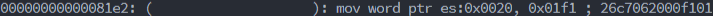
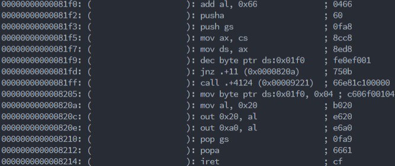
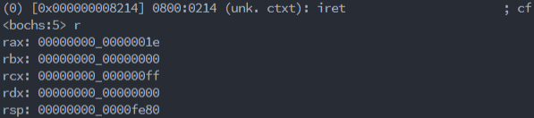
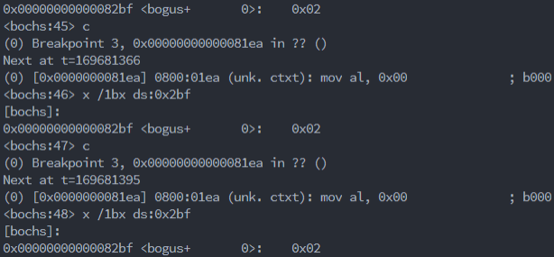

问题1： 时钟中断其他函数坏掉，行为混乱，如光标持续后移。
解决1： 使用push和pop保护寄存器。
根据实验原理 6，中断调用就是跳到中断向量表中写的指定cs和ip，而中断调用和iret并不会恢复cs，ip，flags之外的寄存器值，因此若中断调用修改了原本函数用到的寄存器值，跳回原本函数的时候会破坏函数。根据实验原理原理 12使用pushad，popad等对寄存器进行保护。
_clock_timer:
pushad
push gs
dec byte [count]
jnz _timer_end
call dword clock
mov byte[count],delay
_timer_end:
mov al,20h
out 20h,al
out 0A0h,al
pop gs
popad
iret
问题2： 风火轮的拓展性不够好。
解决2： 对风火轮拆成多个函数。
- 将设置中断向量表，拆成一个函数
void _set_timer()，未来若有需要，可将_clock_timer和count设置成参数。
_set_timer:
sti
xor ax, ax
mov es, ax
mov word[es:20h], _clock_timer
mov ax, cs
mov word[es:22h], ax
ret
delay equ 4
count db delay
- 将中断程序修改为asm函数
void _clock_timer()包裹c函数void clock()。其中asm函数用于中断调用的延迟、保护寄存器和返回，c函数用于实际的效果。
_clock_timer:
pushad
push gs
dec byte [count]
jnz _timer_end
call dword clock
mov byte[count],delay
_timer_end:
mov al,20h
out 20h,al
out 0A0h,al
pop gs
popad
iret
- 将写显存封装为函数
void display(char ch, int x, int y, int color)。用于不需要设置光标的显示字符操作。
_display:
mov eax, dword[esp+12]
mov ebx, 80
mul ebx
add eax, dword[esp+8]
mov ebx, 2
mul ebx
mov ebx, eax
mov ax, 0B800h
mov gs, ax
mov ah, byte[esp+16]
mov al, byte[esp+4]
mov [gs:ebx], ax
ret
问题3： 风火轮功能实用性不强。
解决3： 在风火轮尾部增加一个系统时间。
根据实验原理 8 9 10，可以通过访问CMOS RAM获得系统时间，如下：
_get_time:
mov al, 0
out 0x70, al
in al, 0x71
mov byte[_second], al
我将系统时间存在一个数列unsigned char _time[6]中，使用void _get_time()更新系统时间。另外，由于从CMOS RAM获得的系统时间是BCD，所以使用void BCD2str(unsigned char BCD, char *str)进行转换。
void BCD2str(unsigned char BCD, char *str)
{
str[0] = (BCD >> 4) + '0';
str[1] = (BCD & 0xf) + '0';
}
问题4： 在DOSBox中可以正确显示时间，填写到软盘在虚拟机内不能正确显示时间。
解决4： 经过漫长的排查，终于发现在void BCD2str(unsigned char BCD, char *str)函数中，使用ds:0xfe34来访问*str，之前都是在ss:0xfe34访问的*str，而此处的ds和ss竟然是不一样的！

段地址0x800为正常，换言之ds寄存器的0x40是不正常的。然而观察未进行中断调用时，ds是正常的，怀疑是中断调用应该初始化ds寄存器。另外，如果只修改ds寄存器而不保护它，会出现奇怪的错误，应该是中断调用需要用到ds为0x40。
_clock_timer:
pushad
push es
push gs
push ds
mov ax, cs
mov ds, ax
dec byte [count]
jnz _timer_end
call dword clock
mov byte[count],delay
_timer_end:
mov al,20h
out 20h,al
out 0A0h,al
pop ds
pop gs
pop es
popad
iret
果然成功。
问题5： bochs设置的有的断点不起作用。
解决5： 在设置中断向量表的时候，设置的程序位置在0x81f1

然而在bochs中并没有在0x81f1的指令。

又发现，popad前后sp相差0x20，刚好是8个dword，和实验原理 12不谋而合。


可以从机器码中发现，按照实验原理 12的说法，pushad的机器码应为0x6660，而bochs却将0x66认作是前一条指令，而popad对应的0x6661是正确的。另外，通过对比popad前栈和popad后寄存器的值，可以看出实验原理 12给出的压栈顺序eax，ecx，edx，ebx，esp，ebp，esi，edi是正确的。


分析得知代码中pushad前的count db delay污染了pushad，因而将count db delay放在最后，果然得到了正确的pushad。

问题6： 在DOSBox中时钟中断时可以使用int 16h读取字符，填写到软盘在虚拟机内时钟中断时不能使用int 16h读取字符。
解决6： 断点调试时，发现一直停在int 16h读取字符服务的阻塞位置。

尝试用其他的方法阻塞而不是中断的方式阻塞。根据实验原理 13如用int 16h的非阻塞的检测键盘输入服务，循环阻塞。
_get:
mov ah, 1
int 16h
jz _get
mov ah, 0
int 16h
ret
果真成功。
问题1： void _set_timer()扩展性不够。
解决1： 将void _set_timer()修改为void _set_int(int cs, void (*inter)(), int index)。另外，要保证运行_set_int(int cs, void (*inter)(), int index)时，不被中断，因而分别在首尾加上cli，sti。
_set_int:
cli
xor ax, ax
mov es, ax
mov ax, word[esp+8]
mov ebx, dword[esp+12]
shl ebx, 2
mov word[es:ebx], ax
mov ax, word[esp+4]
mov word[es:ebx+2], ax
sti
ret
另外，将delay修改为在中断中初始化的变量_delay，这样每个中断都会有不同的_delay并且将void _clock_timer()改名为void _clock()。
_clock:
pushad
push es
push gs
push ds
mov ax, cs
mov ds, ax
mov dword[_delay], 10
dec dword[_count]
jnz _clock_end
call dword clock
mov eax, dword[_delay]
mov dword[_count], eax
_clock_end:
mov al, 20h
out 20h, al
out 0A0h, al
pop ds
pop gs
pop es
popad
iret
_data_define:
_delay dd 1
_count dd 1
问题2： void display_str(char *str, int x, int y, int color)和void print(char *str)不支持对'\n'操作。
解决2： 进行如下拓展。
void display_str(char *str, int x, int y, int color)
{
int offset_x = 0, offset_y = 0;
for (int i = 0; str[i] != 0; i++)
{
if (str[i] == '\n')
{
offset_x = 0;
offset_y++;
}
else
{
_display(str[i], x + offset_x, y + offset_y, color);
offset_x++;
}
}
}
void print(char *str)
{
for (int i = 0; str[i] != '\0'; i++)
{
if (str[i] == '\n')
{
cursor_x = 0;
cursor_y++;
}
else
{
_put(str[i]);
cursor_x++;
}
_move(cursor_x, cursor_y);
}
}
问题3： 在调用void callf(int cl, int ch, int dh, int len)时需要设置键盘中断程序void _ouch()。
解决3： 重写void callf(int cl, int ch, int dh, int len)，使其能够调用void _set_int(int cs, void (*inter)(), int index)，设置键盘中断程序void _ouch()。另外根据实验原理 14，int 16h中断会用到int 9中断将60端口扫描码转成缓冲区的字符，因而需要保存原有的int 9中断，以便回来时恢复int 9。
_callf:
xor ax, ax
mov es, ax
mov eax, dword[es:36]
mov dword[_int_9], eax
mov ax, 0xb00
mov es, ax
mov cl, byte[esp+4]
mov ch, byte[esp+8]
mov dh, byte[esp+12]
mov al, byte[esp+16]
mov bx, 0x100
mov ah, 2
mov dl, 0
int 13H
push dword 9
push dword _ouch
push dword 0x800
call dword _set_int
add esp, 12
call 0xb00:0x100
mov ax, cs
mov ds, ax
push dword 9
push dword[_int_9]
push dword[_int_9+2]
call dword _set_int
add esp, 12
ret
问题4： 刚运行用户程序就开始显示"OUCH!OUCH!"。
解决4： 通过运行如下代码，发现每次进入用户程序，都会发生一次键盘中断，表现为每次进入用户程序不按键盘，都会产生不同颜色的OUCH!OUCH!
int color = 0b11100100;
void ouch()
{
display_str("OUCH!OUCH!", 35, 12, color);
color = ~color;
}
另外，进入用户程序的时候，按下键盘和松开键盘都会改变一次颜色，即都会发生键盘中断。这样，上面的问题可以这样解释：按Enter键还未松开时，进入用户程序，松开Enter刚好触发一次中断导致出现"OUCH!OUCH!"。可以通过增加一个变量_press在调用用户程序的时候初始化，键盘中断每两次展示一次"OUCH!OUCH!"。
int 13H
mov dword[_press], 0
push dword 9
push dword _ouch
push dword 0x800
call dword _set_int
add esp, 12
call 0xb00:0x100
_ouch:
pushad
push es
push gs
push ds
mov ax, cs
mov ds, ax
in al, 60h
cmp dword[_press], 0
jz _ouch_end
call dword ouch
_ouch_end:
xor dword[_press], 0xffff
mov al, 20h
out 20h, al
out 0A0h, al
pop ds
pop gs
pop es
popad
iret
问题4： void ouch()需要设置成显示一段时间，然后不显示。
解决4： 起初想通过调用void _get_time()刷新时间数组unsigned short _time，据此可以设置成1s变换1次颜色共显示4s。但是却发现，中断过程中CMOS RAM的值一直没有发生变化，怀疑是CMOS RAM值的更新也需要可屏蔽中断控制，根据*实验原理 6.*运行中断前先cli，因而无法执行其他可屏蔽中断，因而无法修改。
void ouch()
{
int color = 0b11100100;
_get_time();
unsigned short sec = _time[5];
for (int i = 0; i < 4; i++)
{
while (1)
{
_get_time();
if (_time[5] != sec)
{
sec = _time[5];
break;
}
}
display_str("OUCH!OUCH!", 35, 12, color);
color = ~color;
}
display_str(" ", 35, 12, 0x0f);
}

因而改成循环。
void ouch()
{
int color = 0b11100100;
for (int i = 0; i < 4; i++)
{
display_str("OUCH!OUCH!", 35, 12, color);
color = ~color;
for (unsigned int j = 0; j < 0x3ffffff; j++)
;
}
display_str(" ", 35, 12, 0x0f);
}
问题5： 如果用户程序需要键盘服务，则重写中断向量表会导致无法正常使用。
解决5： 根据实验原理 15，int 9将键盘扫描码转成对应ascii放入键盘缓冲区中，int 16h通过读取键盘缓冲区，返回键盘输入。因而，若要使用键盘服务，则需要保留原本int 9的服务。
_ouch:
pushad
push es
push gs
push ds
mov ax, cs
mov ds, ax
in al, 60h
pushf
pushf
pop ax
and ah, 0b11111100
push ax
popf
call dword[_int_9]
cmp dword[_press], 0
jz _ouch_end
call dword ouch
根据实验原理 6，可以通过模拟中断调用的方式，来调用存在_int_9位置的函数。另外，根据实验原理 11，可以通过栈和掩码的操作修改if tf的值。因此第一次pushf将flags压入栈，在运行dword[_int_9]到iret时，弹出。第二次pushf，连同后面的popf用来修改if tf。另外，若要使用call 段:偏移的方式调用，需要段是立即数，因而设置立即数_int_9_cs，_int_9_ip。
_ouch:
pushad
push es
push gs
push ds
mov ax, cs
mov ds, ax
in al, 60h
pushf
pushf
pop ax
and ah, 0b11111100
push ax
popf
call _int_9_cs:_int_9_ip
cmp dword[_press], 0
jz _ouch_end
call dword ouch
问题6： 发现上次写的cal.com是存在BUG的，无法返回监控程序。
解决6： 首先是，返回的时候应该使用retf从而弹出cs和ip。另外ss寄存器初始化后需要恢复，然而ss寄存器决定了栈的段地址，因而只有将旧的ss存在新的栈中才行，这就需要先用其他寄存器拷贝一下ss的值。另外，esp也应当初始化，因为esp寄存器决定了决定了栈大小，而新进入所有用户程序栈应该是一个定长的。因此不妨将esp设为0xffff。同样，其他nasm代码入口也应改成这样，而stoneN.asm系列不改也无妨，因为它们没有用到栈。
_start:
push dword ebp
mov ax, cs
mov ds, ax
mov bx, ss
mov ss, ax
mov ebp, esp
mov esp, 0xffff
push word bx
push dword ebp
call dword main
mov bx, word[esp+4]
pop dword esp
mov ss, bx
pop dword ebp
retf>_start:
问题7： 在cal.com中，时间乱码。
解决7： 见步骤2.问题4分析，即要求中断进行过程中ss寄存器ds值相同。
然而因为中断程序是内核程序的一部分，在用户程序调用中断程序时可能修改内核程序的栈，因而起初并未对ss寄存器进行设置。
由于设置了常规程序栈顶在0xffff，而且目前com文件前0x100是没有内容的，所以不妨将栈顶设在0x100。但是这样一来，栈只有256B大小，所以规定中断程序相关的函数内不能有数组出现。
_clock:
pushad
push word es
push word gs
push word ds
mov ax, cs
mov ds, ax
mov bx, ss
mov ss, ax
mov ebp, esp
mov esp, 0x100
push word bx
push dword ebp
mov dword[_delay], 10
dec dword[_count]
jnz _clock_end
call dword clock
mov eax, dword[_delay]
mov dword[_count], eax
_clock_end:
mov al, 20h
out 20h, al
out 0A0h, al
mov bx, word[esp+4]
pop dword esp
pop word ss
mov ss, bx
pop word ds
pop word gs
pop word es
popad
iret
char HW_arr[] = "\\|/";
int HW_cur = 0;
char clock_str[20] = "20yy/mm/dd hh:mm:ss";
void clock()
{
if (HW_arr[HW_cur] == 0)
{
HW_cur = 0;
}
_display(HW_arr[HW_cur++], 60, 24, 0b00111111);
_get_time();
char *ptr = clock_str + 2;
for (int i = 0; i < 6; i++)
{
BCD2str(_time[i], ptr);
ptr += 3;
}
display_str(clock_str, 61, 24, 0b00111101);
}
问题8： 上次使用ret而非o32 ret的原则如今不适用。
解决8： 观察发现nasm中ret机器码不带0x66，而gcc中ret机器码带0x66，应该将ret改成o32 ret即可。
问题9： 用户程序运行和void _ouch()运行是互斥的，即显示"OUCH!OUCH!"的同时其他程序是不工作的，如果用户程序需要输入就会持续打断非常不人性化。
解决9： 扩展void clock()。使其可以按需求显示字符串。基本原理如下：
- 类似FAT表项的可复用的链表数据结构
struct node。
将之前写的用于存字符的链表节点结构struct node的int next和int last属性单独剥离出来，构成新的数据结构struct node，一种类似FAT表项的数据结构。
struct node
{
int next;
int last;
};
这样之前的游标空间的数组struct node ndsp[NDSPSZ]，就改为两个数组char chsp[CHSPSZ]和struct node chndsp[CHSPSZ]分别用来存节点值，和节点的前驱后继位置。
相应的，构造函数new_node和析构函数delete_node也做成只处理节点前驱后继位置的函数，不处理节点值。
这样一来，就可以让链表节点值和前驱后继位置形成像FAT表项和文件之间的关系，做到一个可以复用链表数据结构。
- 要实时显示的内容数据结构
struct layer。
通过void display_str(char *str, int x, int y, int color)函数显示一个字符串需要char *str，int x，int y，int color四个参数，分别表示显示内容，x轴位置，y轴位置，颜色。这样一来只需要这四个参数，再调用这个函数就可以显示字符串。同时由于步骤3.问题2使void display_str(char *str, int x, int y, int color)函数已经支持'\n'，所以只需要一个字符串就可以显示多行。
struct layer
{
char *str;
int x;
int y;
int color;
};
类似的，用struct node使其可以串成一个链表。
- 用于实时生成显示内容的数据结构
struct layfun。
其中void (*fun)(int *n_ptr)成员表示用于实时生成显示内容struct layer的函数。int n成员表示剩余显示次数；int *n_ptr用于接收int n以便fun修改之。一旦int n归零，表示该函数失效，就需要将该节点删掉。
struct layfun
{
void (*fun)(int *n_ptr);
int n;
};
同样用struct node使其可以串成一个链表。
- 重写的
void clock()，用于实时处理两个链表。
void clock()先从头部遍历一次struct layfun的链表，执行链表中的每个函数。每个函数会生成一个struct layer类型的节点在struct layer链表的头部；还会修改int n的值，因此在函数执行完毕后，检查一下int n是否为0，如果为0，就删掉该节点。
再从头部遍历一次struct lay的链表，每遍历一个显示其中的内容，并且将其删除。
void clock()
{
for (int ptr = lyfnheader; lyfnsp[ptr].fun != NULL; ptr = lyfnndsp[ptr].next)
{
lyfnsp[ptr].fun(&lyfnsp[ptr].n);
if (lyfnsp[ptr].n == 0)
{
delete_node(ptr, &lyfnheader, lyfnndsp);
}
}
while (lysp[lyheader].str != NULL)
{
display_str(lysp[lyheader].str, lysp[lyheader].x, lysp[lyheader].y, lysp[lyheader].color);
delete_node(lyheader, &lyheader, lyndsp);
}
}
- 重写风火轮，显示时间，显示OUCH，使其符合上述
void (*fun)(int *n_ptr)的规范，即生成struct layer和修改int n。
这里有一些有创意的设计，比如修改刷新频率：
void clock_time(int *n_ptr)
{
if (*n_ptr % 2 == 0)
{
_get_time();
char *ptr = clock_str + 2;
for (int i = 0; i < 6; i++)
{
BCD2str(_time[i], ptr);
ptr += 3;
}
new_layer(clock_str, 61, 24, 0b00111101, lyheader);
}
*n_ptr -= 1;
...
}
实时可变的显示颜色：
void clock_ouch(int *n_ptr)
{
...
else
{
ouch_color = ~ouch_color;
}
}
有限的生命：
void clock_ouch(int *n_ptr)
{
new_layer(ouch_str, 35, 12, ouch_color, lyheader);
*n_ptr -= 1;
if (*n_ptr == 1)
{
ouch_color = 0;
}
...
}
续命：
void clock_hotwheel(int *n_ptr)
{
hotwheel_str[0] = hotwheel_arr[*n_ptr % 3];
new_layer(hotwheel_str, 60, 24, 0b00111111, lyheader);
*n_ptr -= 1;
if (*n_ptr % 3 == 0)
{
*n_ptr = 3;
}
}
- 不同显示内容的覆盖关系。
由4可以看出，struct layer不同节点显示之间，是有覆盖关系的。
struct layer的链表是先入后出的，因此是先入链表的显示内容会覆盖后入链表的显示内容。
因此需要struct layfun链表同样先入后访问，这样才能使先放入struct layfun链表的函数后生成struct layer节点，从而先显示被后显示的覆盖。因此，再struct layfun链表每次插入新结点的时候，从头部插入，然后遍历的时候从头部访问。
new_layfun(clock_hotwheel, 3, lyfnheader);
这样才能满足后打开的窗口覆盖先打开的窗口的自然的覆盖关系。